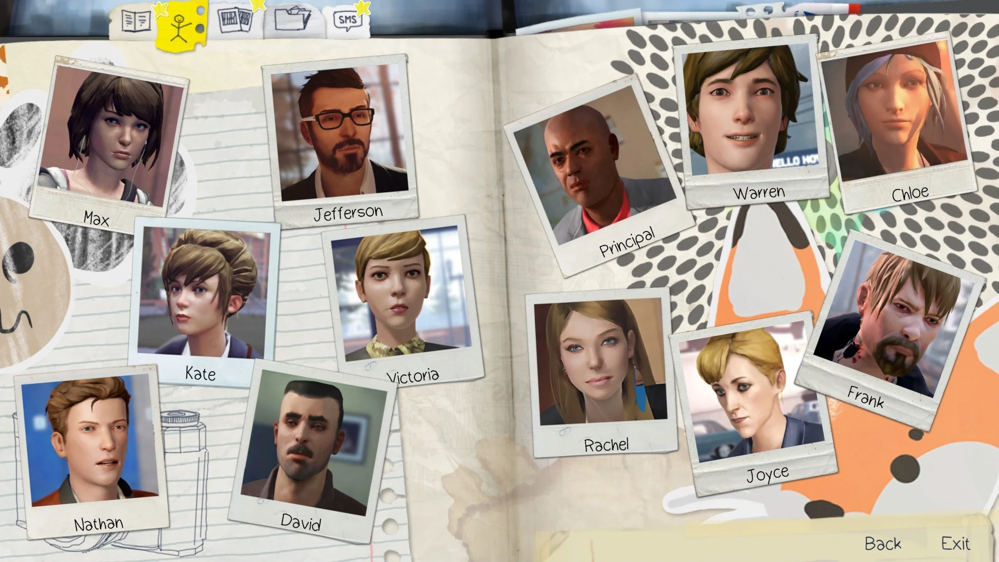

Personagnes
Nesta categoria estão alguns personagens do primeiro jogo da franquia Life is Strange.
Nesta categoria estão alguns personagens do primeiro jogo da franquia Life is Strange.
Conhecida como Max (nascida em 21 de setembro de 1995), é a protagonista jogável de Life is Strange. Ela é uma estudante de 12º (último) ano do ensino médio na Blackwell Academy. Ela pode voltar no tempo e se sente sem parar entre a cidade fictícia de Arcadia Bay, Oregon, onde ela cresceu.
Chloe Elizabeth Price (nascida em 11 de março de 1994) é deuteragonista de Life is Strange. Ela é a melhor amiga de Max Caulfield, deixando de serem amigas por alguns anos até Max retornar para Arcadia Bay, Oregon. Ela tatuou seus braços esquerdo e direito e seu cabelo é azul. Chloe estava a dois passos de um relacionamento sério com Rachel Amber antes da mesma desaparecer. Chloe é filha de William Price e Joyce Price e enteada de David Madsen.
Nathan Joshua Prescott (nascido em 29 de agosto de 1995) é um aluno da Academia Blackwell e um dos antagonistas de Life is Strange. Ele é um estudante de segundo ano no ensino médio e o herdeiro da família mais poderosa e influente de Arcadia Bay, os Prescott. É bastante sugestivo que ele sofre de uma doença mental e faz terapia.